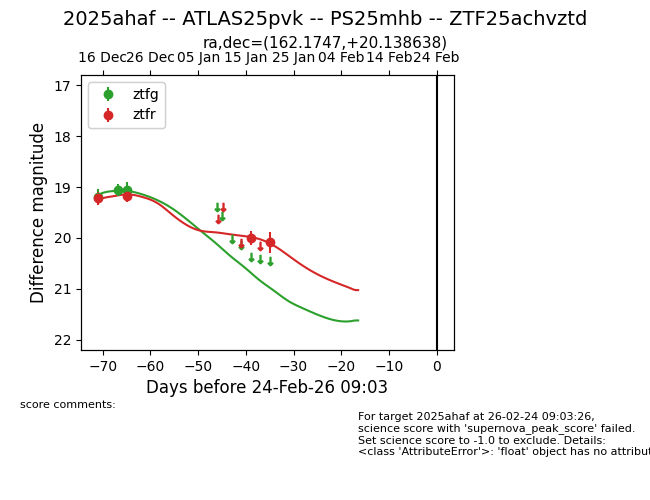
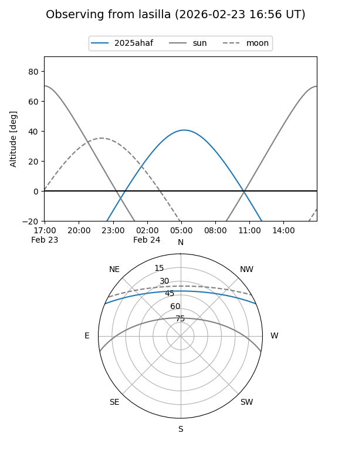
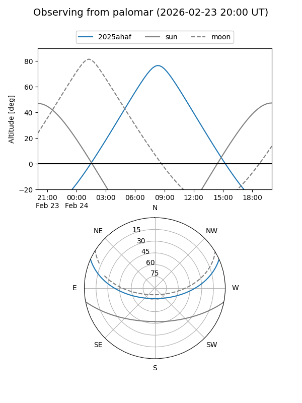
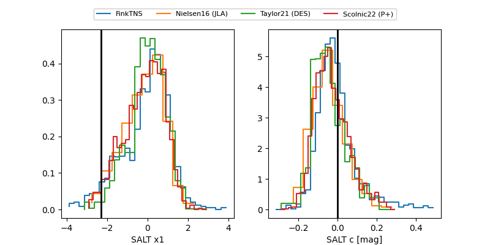

2025ahaf
Target 2025ahaf at 2025-12-21 13:22
Aliases and brokers:
FINK: fink-portal.org/ZTF25achvztd
Lasair: lasair-ztf.lsst.ac.uk/objects/ZTF25achvztd
ALeRCE: alerce.online/object/ZTF25achvztd
TNS: wis-tns.org/object/2025ahaf
YSE: ziggy.ucolick.org/yse/transient_detail/2025ahaf
alt names
ZTF25achvztd (ztf,fink_ztf)
2025ahaf (tns,yse)
Coordinates:
equatorial (ra, dec) = 162.1747,+20.13864
equatorial (HMS+DMS) = 10:48:41.92,+20:08:19.10
galactic (l, b) = (220.2758,+61.11336)
Flags:
Photometry:
last ztfg=19.06, ztfr=19.17
3 ztfg, 2 ztfr detections
Lightcurve

Visibility


Additional plots
